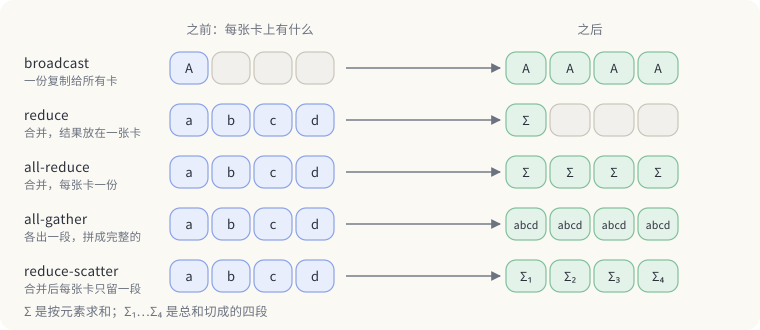
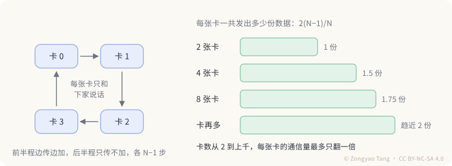
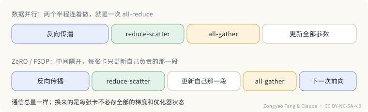
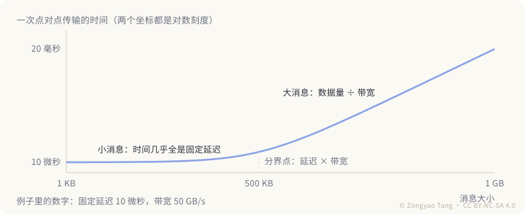

线索是：分布式训练里所有的通信，都可以用五个“集合通信”操作来描述 → 其中最重要的 all-reduce，有一个巧妙的环形算法，卡再多每张卡的通信量也不变 → 把这个算法拆成两半，就得到另外两个操作，它们是 FSDP 的基础 → 最后用一个简单的公式估算一次通信要多久。这一单元只讲“做什么、要多久”；NCCL 内部怎么做，放在 6.2。
第 6 部分 · 集合通信与 NCCL6.1 集合通信与 NCCL
这一单元回答多张卡之间怎样高效地交换数据？通信的时间由什么决定？
承接第 5 部分：链路有了，这一单元讲多张卡怎样在这些链路上高效地交换数据。
- 五个集合通信原语，是分布式训练的全部词汇
- Ring all-reduce：卡再多，每张卡的通信量也几乎不变
- all-reduce = reduce-scatter + all-gather
- 通信时间 = 固定延迟 + 数据量 ÷ 带宽
讲解
1五个集合通信原语，是分布式训练的全部词汇
broadcast：一张卡的数据发给所有卡。reduce：所有卡的数据汇总到一张卡。all-reduce：汇总后每张卡都拿到结果。all-gather：每张卡贡献一份，拼成完整的一份发给所有卡。reduce-scatter：汇总后切开，每张卡只拿自己负责的那一段。

四张卡上的五种操作 “集合通信”是相对“点对点”说的：不是一张卡发给另一张卡，而是一组卡共同完成一件事。设有 N 张卡，每张卡上有一块数据。
- broadcast：一张卡的数据，复制给所有卡。用途：训练开始时让所有卡拿到同样的初始参数。
- reduce：把所有卡的数据按元素合并（通常是求和），结果放在一张卡上。
- all-reduce：同样是合并，但结果每张卡都有一份。用途：数据并行里把各卡的梯度加起来，每张卡都要用这个总和去更新参数。
- all-gather：每张卡贡献一段，拼成完整的一份，每张卡都拿到完整的。用途：FSDP 里每张卡只存参数的一部分，算某一层之前要把这一层拼完整。
- reduce-scatter：先像 all-reduce 那样合并，再把结果切成 N 段，每张卡只留下属于自己的那一段。用途：FSDP 里梯度求和之后，每张卡只需要“自己负责的那部分参数”的梯度。
把它们和后面的单元对上：
- 数据并行 DDP（7.1）：每步一次 all-reduce（实际按桶分成若干次）。
- FSDP（7.2）：每一层前向前一次 all-gather，反向后一次 reduce-scatter。
- 张量并行（7.3）：每一层内部都有 all-reduce。
所以读任何一个分布式训练方案，最快的办法是问三件事：它用了哪种集合通信，每步用几次，每次的数据有多大。知道了这三样，再配上本单元最后的时间公式，就能估出通信的开销。
NCCL 提供的正是这五个操作，外加点对点的收发。PyTorch 的
torch.distributed在 GPU 上调用的就是它。打个比方像开会：广播是领导发通知；reduce 是把报表汇总交给一个人；all-reduce 是汇总后人手一份；all-gather 是每人交一页、装订成全册发给大家；reduce-scatter 是汇总后每人只领自己负责的那几页。
所以看懂一个并行方案，就是看它什么时候用了哪种通信：DDP 用 all-reduce，FSDP 用 all-gather 加 reduce-scatter。
出处CUDA for LLMs 第 10 章 集合通信Accelerate reduce 与 all-reduce- 五个操作里 all-reduce 用得最多。最直接的做法是所有卡把数据发给一张卡，它求和后再发回去，但那张卡的链路会成为瓶颈。有一个更好的办法。
2Ring all-reduce：卡再多，每张卡的通信量也几乎不变
N 张卡排成一个环，数据切成 N 段。每一步每张卡只和邻居交换一段，走 2(N−1) 步后每张卡都拿到完整的汇总。每张卡收发的数据量约是 2(N−1)/N 倍的数据大小，卡数再多也不超过 2 倍。
把 N 张卡排成一个环，每张卡只和下家说话。每张卡把自己的数据切成 N 段。
前半程：边传边加。 第一步，卡 i 把自己的第 i 段发给下家。之后每一步，每张卡把收到的那一段和自己对应的那一段相加，再把结果发给下家。一段数据每经过一张卡，就多加上一张卡的贡献。走完 N−1 步，每一段都转了几乎一整圈，加上了所有卡的贡献。此时每张卡手里恰好有一段是“完整的总和”。
后半程：只传不加。 每张卡把自己手里那段完整的总和发给下家，下家存下来并继续往下传。再走 N−1 步，每张卡都收齐了全部 N 段。

环上的每条链路负载相同 算一下通信量。 每一步每张卡发出一段，大小是数据的 1/N。一共 2(N−1) 步，所以每张卡总共发出 2(N−1)/N 份数据：
- 2 张卡：1 份
- 4 张卡：1.5 份
- 8 张卡：1.75 份
- 卡再多：趋近 2 份，永远不超过
而且每一步所有卡同时在发、同时在收，环上每一条链路都在满负荷工作，没有哪张卡是瓶颈。所以对大数据量，时间约等于 2 × 数据量 ÷ 一条链路的带宽，和卡数几乎无关。这是它被称为“带宽最优”的原因。
它的弱点是步数。 2(N−1) 步里，每一步都要付一次固定的延迟（发起传输、同步）。数据量大时这点延迟可以忽略；数据量小、卡又多时（比如 1000 张卡同步一个很小的张量），时间就全花在这两千步的延迟上了。这时用树形的算法更合适：步数只随卡数的对数增长。NCCL 会根据消息大小和卡数自动选择（6.2）。
这里出现了 0.1 的两个思想：瓶颈（把负载摊到每一条链路上，不让任何一处成为窄口）和固定成本（步数多了，每步的手续费就显出来了）。
一步一步：4 张卡的环形 all-reduce
设 4 张卡的数据分别是 a、b、c、d，各切成 4 段，下标 0 到 3。目标是每张卡都得到 a+b+c+d 的全部 4 段。
第 0 步（发）。 每张卡把一段发给下家：卡 0 发 a0，卡 1 发 b1，卡 2 发 c2，卡 3 发 d3。
第 1、2 步（收、加、发）。 每张卡把收到的段和自己的同一段相加，再发给下家。以第 0 段为例：
- 第 0 步后：卡 1 收到 a0，算出 a0+b0。
- 第 1 步后：卡 2 收到 a0+b0，算出 a0+b0+c0。
- 第 2 步后：卡 3 收到 a0+b0+c0，加上 d0，得到第 0 段的完整总和。
其他三段同时在环上的其他位置做同样的事。第 3 步结束时，每张卡手里各有一段完整的总和。到这里为止就是一次 reduce-scatter。
第 3 步（收、加、存、发）。 每张卡完成最后一次相加，把这段完整的总和存进输出，同时发给下家。
第 4、5 步（收、存、发）。 每张卡把收到的完整段存进输出，再原样传给下家。
第 6 步（收）。 每张卡收到最后一段，存下来。结束。这后半程就是一次 all-gather。
一共 2×4−1 = 7 步。Demystifying NCCL 把 NCCL 源码里每一步对应的操作列了出来，名字直接说明了动作：
- 第 0 步：
send - 中间的累加步：
recvReduceSend（收、合并、发） - 转折的那一步：
recvReduceCopySend（收、合并、存一份、发） - 后半程：
recvCopySend（收、存、发） - 最后一步：
recv
读 NCCL 源码里 all-reduce 的环形实现时，看到的就是按这个顺序排列的几个调用。
打个比方像围成一圈传纸条：每人每轮只和旁边的人交换一小张，转两圈后，每个人手里都有了全班的汇总。
所以大消息 all-reduce 的时间约等于 2 × 数据量 ÷ 链路带宽，和卡数基本无关；卡多、消息小时，步数带来的延迟成为主导，NCCL 会改用 tree 等算法。
后面会用到 all-reduce = reduce-scatter + all-gather通信时间 = 固定延迟 + 数据量 ÷ 带宽大部分工作在初始化时一次做完：探测拓扑、建环和树、连好每一对卡算法决定数据在卡之间的走法：环的带宽最好，树的步数最少出处Accelerate ring all-reduceCUDA for LLMs 第 10 章 AllReduce- 仔细看环形算法的两个半程，它们各自就是一个独立的操作。
3all-reduce = reduce-scatter + all-gather
ring all-reduce 的前一半步骤，做的正是 reduce-scatter：每张卡得到某一段的总和；后一半步骤是 all-gather：把各段发给所有卡。
回看上一节的两个半程：
- 前半程结束时，每张卡手里有“总和的其中一段”。这正是 reduce-scatter 的定义：合并，然后每张卡只拿自己那一段。
- 后半程把各自那一段分发给所有卡，直到每张卡都有完整的一份。这正是 all-gather 的定义。
所以 all-reduce 可以看成这两个操作首尾相接。两个半程的通信量各是 (N−1)/N 份数据，加起来就是上一节的 2(N−1)/N。

同样的两个半程，连着做或者隔开做 这个分解为什么重要。 因为两个半程之间可以插入别的工作，甚至可以隔很久。
数据并行里，梯度做完整的 all-reduce，是因为每张卡都存着全部参数，都需要全部梯度来更新。但如果每张卡只负责更新参数的 1/N（ZeRO 和 FSDP 的做法，7.2），那么：
- 梯度只需要做 reduce-scatter：每张卡拿到“自己负责的那一段参数”的梯度总和就够了，不需要别人那几段。
- 每张卡用它更新自己那一段参数。
- 等到下一次前向需要完整参数时，再做 all-gather 把各段拼起来。
通信总量和一次 all-reduce 一样，但换来了显存：每张卡不再需要存全部的梯度和全部的优化器状态。
这也解释了 6.3 里一个容易困惑的细节：测带宽时，all-reduce 的修正系数是 2(N−1)/N，而 reduce-scatter 和 all-gather 的是 (N−1)/N，正好是一半。
打个比方像小组汇报：先每人负责汇总一部分数据，再把各自汇总好的部分交换给所有人。
所以可以把这两半拆开，在中间插入别的工作。ZeRO 和 FSDP（7.2）正是先用 reduce-scatter 拿到“自己那段”的梯度，只更新自己那段参数，再用 all-gather 拼回来。
- 知道了算法，最后需要一个能估算时间的简单模型。
4通信时间 = 固定延迟 + 数据量 ÷ 带宽
每次通信都有一段与数据量无关的启动延迟，再加上按数据量计算的传输时间。消息小时，延迟占了大头；消息大时，带宽决定一切。机器内部的 NVLink 和跨机器的网络，带宽可以差出十倍以上。
把一次点对点传输的时间写成两项：
时间 = 固定延迟 + 数据量 ÷ 带宽
- 固定延迟：不管数据多少都要付的部分。发起一次传输、双方同步状态、网络上的往返。量级是微秒到几十微秒。
- 数据量 ÷ 带宽：真正搬数据的时间。带宽就是第 5 部分那些链路的宽度。
分界点在哪。 两项相等时的数据量 = 固定延迟 × 带宽。比如延迟 10 微秒、带宽 50 GB/s，分界点是 500 KB。比它小得多的消息，时间几乎全是延迟，带宽再高也没用；比它大得多的消息，延迟可以忽略。

分界点两边，决定时间的是不同的东西 对集合通信。 一次 all-reduce 由很多步点对点传输组成。用环形算法、N 张卡、数据量 S：
时间 ≈ 2(N−1) × 每步的固定延迟 + 2(N−1)/N × S ÷ 带宽
第一项随卡数线性增长，第二项几乎不变。所以大消息看带宽，小消息加多卡看延迟。
用它解释三件事。
- *为什么小张量要攒起来发。* 一个模型有几百个参数张量，很多只有几 KB（偏置、归一化层的参数）。每个单独做一次 all-reduce，就要付几百次固定延迟。DDP 把它们攒进 25 MB 左右的桶里一起发（7.1），延迟只付几次。这是 0.1 里“成批处理，摊薄固定成本”的又一个例子。
- *为什么测带宽要用大消息。* 用小消息测出来的“带宽”低得可怜，那量到的其实是延迟。6.3 会讲怎样看一条完整的曲线。
- *为什么并行方式要按链路分层。* 机内 NVLink 的带宽比跨机的网络高一个量级（5.1）。同样大小的一次通信，放在机内和放在跨机，时间差十倍。所以最频繁的通信要留在机内（7.3）。
这个模型很粗：它没有考虑拥塞、链路共享、通信和计算争抢 GPU。Demystifying NCCL 的作者也说，变量太多，他们放弃了给出精确的时间公式。但用来判断量级、判断该看延迟还是看带宽，它足够了。
打个比方像寄快递：每一单都有固定的手续时间，再加上按重量算的运输时间。寄一堆小件，时间几乎全花在手续上。
所以小消息要攒成大块再发（DDP 的梯度分桶就是这么做的），测 all-reduce 带宽要用足够大的消息；规划并行方式时，最频繁的通信要放在最快的链路上（7.3）。
出处CUDA for LLMs 第 10 章 不同互联的带宽差距
串起来
五个集合通信操作是分布式训练的全部词汇。环形 all-reduce 让每张卡的通信量约为数据的 2 倍，与卡数无关；它的前一半是 reduce-scatter，后一半是 all-gather。一次通信的时间 = 固定延迟 + 数据量 ÷ 带宽：小消息看延迟，大消息看带宽，而带宽就是第 5 部分讲的那些链路。
考考自己
不看讲解，用自己的话讲一遍。
- 五个集合通信操作各自做什么？DDP 和 FSDP 分别用到哪几个？
- 环形 all-reduce 是怎么做的？为什么卡数增加时，每张卡的通信量几乎不变？
- 为什么说 all-reduce = reduce-scatter + all-gather？这个分解有什么用？
- 一次通信的时间由哪两部分组成？它怎样解释“小消息要攒起来发”？
术语
- all-reduce
- 全规约
- reduce-scatter
- 规约分散
- all-gather
- 全收集
- collective communication
- 集合通信